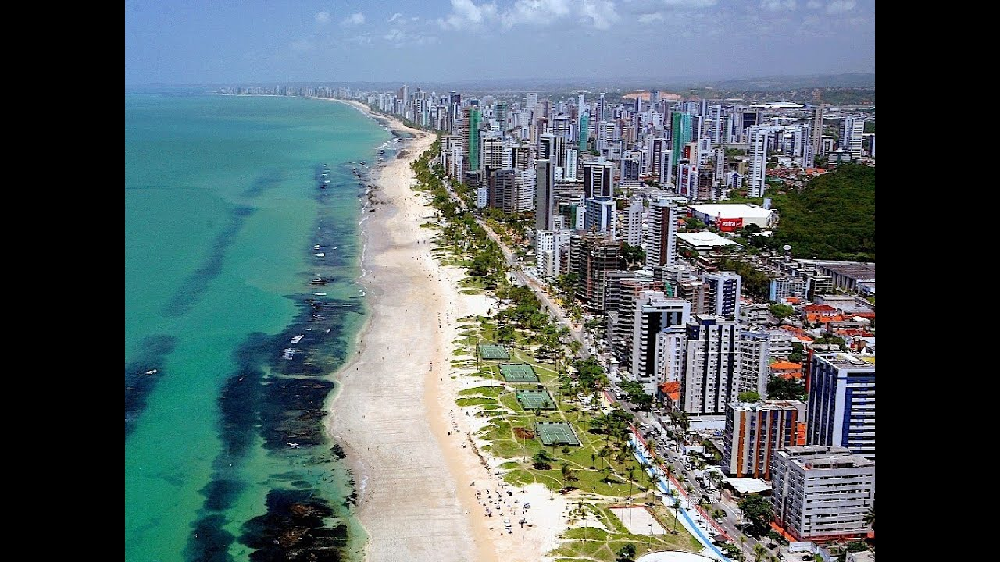

Bem vindo a Recife
Pontos Turisticos
Alguns pontos Turisticos de Recife-PE.
Praia de Boa Viagem A mais famosa e frequentada praia de Recife possui uma beleza singular e é uma das mais bonitas do Brasil, e provavelmente do mundo, também. Sua extensão é de mais de 7 km pelo bairro de Boa Viagem. As águas verdes e cristalinas são excelentes para você aproveitar e mergulhar. A praia ainda conta com quiosques em seu calçadão, onde é possível encontrar diversas barracas com comidas, bebidas e também vendedores de arte local.

Praia da Enseada dos Corais Turismo em Recife PRAIA ENSEADA DOS CORAIS Se você quer aproveitar um local mais tranquilo, a praia da Enseada dos Corais pode ser a praia certa para você. O clima é muito agradável e sua beleza natural também é um destaque. É um lugar ideal para descanso. O local fica a 45 minutos da capital e é muito indicado para aqueles que buscam uma praia alternativa para curtir as férias ou um feriado prolongado. Além disso, o local é favorável à prática de esportes náuticos, como surf, e esportes de praia, como vôlei e futebol de areia. Com uma área ampla, a Praia da Enseada dos Corais é um importante ponto e com muito a ser explorado quando se pensa em turismo em Recife.

A Casa da Cultura de Recife Turismo em Recife Casa da Cultura Se você ainda quiser estender um pouco mais as visitas aos pontos culturais e históricos da cidade, considere visitar a Casa da Cultura de Recife. O local é uma visita obrigatória àqueles que fazem turismo em Recife. Sendo o maior centro de cultura e de arte pernambucana, o local abarca diversas formas de expressão da arte. Essas obras variam de obras do sertão nordestino até o litoral. Além disso, você pode encontrar e comer o tradicional bolo de rolo, que se tornou patrimônio cultural de Recife. Então, sempre que planejar turismo em Recife, separe um tempo para aprender mais sobre a cultura nordestina..